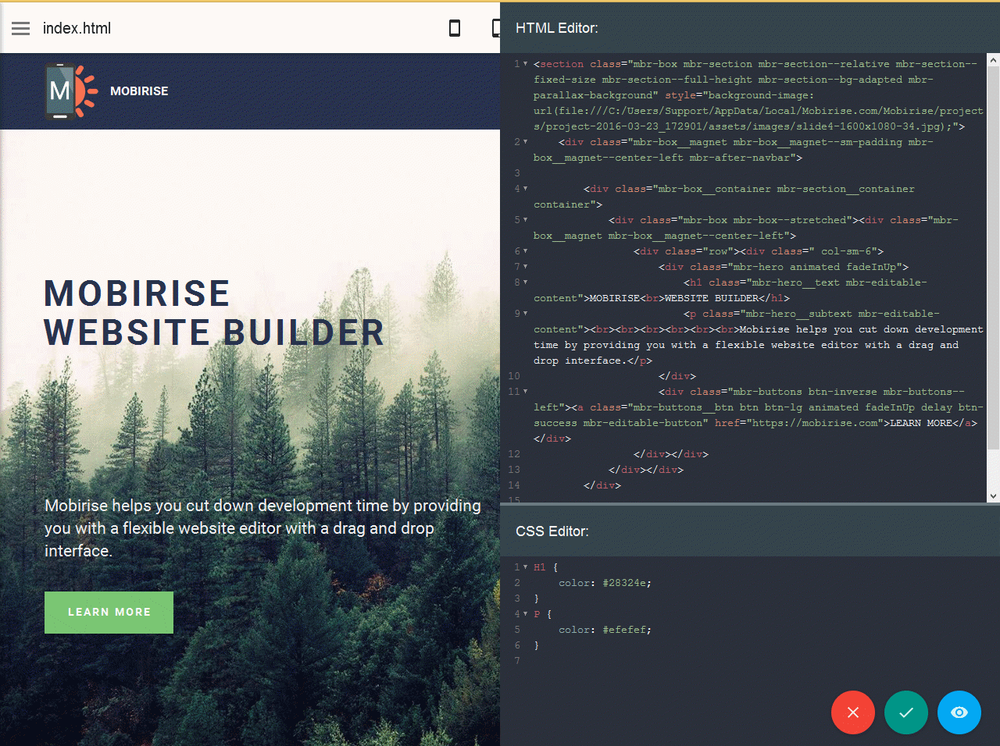

UT 02

Sumario
- Editores de código.
- Tipos de editores de código
- WYSIWYG
- Editor HTML textual
- Editores de código online.
Editores de código
Las aplicaciones web están desarrollada a partir de texto plano, podemos crear dicho texto plano con cualquier editor de texto. Pero no es la mejor idea. Existen herramientas especificas para estas tareas. ¿Qué hacen de sas herramientas que no hacen los editores de texto?.
- Coloreado del código.
- Facilidad en la selección y edición de texto.
- Un ejemplo sería el permitir seleccionar y editar múltiples lineas
- Mejora la visualización de código.
- Permitiendo ocultar secciones, ...
- Marcar errores.
- Vista previa integrada.
- Nos muestra como quedaría el código html y css mientras se esta creando. Sin necesidad de estar grabando el documento y actualizando la web.
- Autocomplementar. Nombre de variables, objetos, comandos y etiquetas.
- Nos muestra sugerencias de lo que puede que queramos escribir y pulsando sobre intro o tabulador lo termina el editor de escribir.
- Acceso a la consola del sistema.
- Extensiones o plugins.
- Añadir funcionalidades creadas por terceros. Como por ejemplo Emmet, …
Tipos de editores de código
WYSIWYG
WYSIWYG es el acrónimo de What You See Is What You Get (Lo que ves es lo que obtienes). Estos editores proporcionan una interfaz de edición que muestra cómo se ve el código en una página web activa. El uso de editores WYSIWYG no requiere ningún conocimiento de HTML; por lo tanto, es mucho más fácil comenzar para un usuario sin experiencia alguna en programación.
Ejemplos: CoffeeCup, Adobe Dreamweaver, Mobirise o SeaMonkey.
Editor HTML textual
Como su nombre lo indica, los editores de HTML textuales se basan en texto. Debes tener conocimientos de HTML para utilizar este tipos de editores. Las funciones incluyen la apertura de archivos, ya sea un solo archivo, un proyecto completo o múltiples proyectos, y es algo disponible en todos los editores.
Al utilizar un editor basado en texto, no puedes ver una vista previa en vivo del sitio.
Este tipo de editor puede ofrecer más libertad y opciones personalizadas. Con un editor textual, puedes optimizar mejor las páginas web para los motores de búsqueda.
Por ejemplo, es posible crear una página web que siga las Pautas de accesibilidad del contenido web (WCAG, por sus siglas en inglés), para que las personas con discapacidades puedan ver tu página web.
Ejemplos: Sublime Text, Brackets, WebStorm, Visual Studio, Atom, …
Editores de código online.
Los editores "en la nube" se usan cada vez más. No los usarás para crear proyectos completos (aunque en teoría podrías) sino más bien para usarlos desde cualquier lugar para pruebas rápidas, experimentos y compartir código con otros desarrolladores. Esto último es especialmente útil si estás comenzando.
Ejemplos: AWS CLOUD9, CODENVY, ICECODER y SÚPER NEUTRON DRIVE.